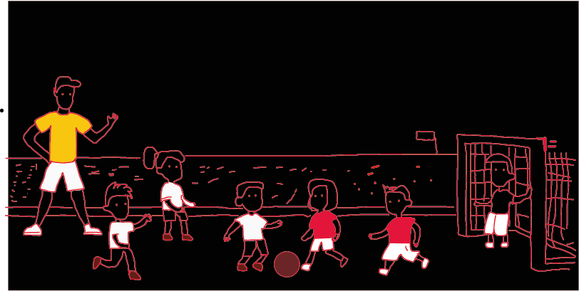
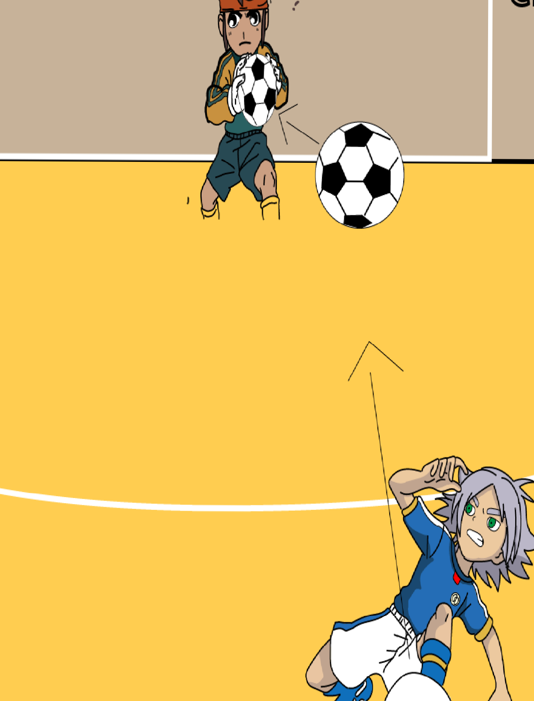
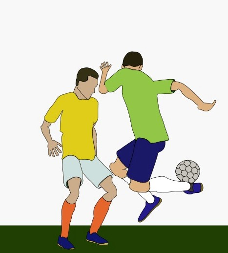

Irei falar um pouco sobre a tecnica de passe de bola
A Técnica de Passe de bola no Futsal é o ato de enviar a bola para um jogador da mesma equipe. O Passe pode ser realizado com qualquer parte do corpo permitida pelas Regras do Futsal, com os pés, a coxa, o peito, a cabeça, o calcanhar. A técnica mais utilizada de passe é feita tocando a bola com a parte interna do pé, o chamado passe colocado.
tecnica de chute
A Técnica consiste em bater na bola arrastando a parte da frente da sola do pé no solo da quadra, como se você estivesse tentando cavar um buraco no solo com a chuteira. O Chute de “cavadinha” é um chute de pouca força, lento, que tem como objetivo fazer a bola passar por cima do goleiro e entrar na meta.
tecnica de Lambreta
A trajetória da bola dá nome a esse truque. O truque geralmente é realizado enquanto se corre para a frente com a bola e é feito rolando a bola na parte de trás de uma perna com o outro pé, antes de sacudir o pé em pé para cima para impulsionar a bola para frente e por cima da cabeça
obrigado por visitar nosso site
Para voltar a pagina inicial clique aqui
link para a pagina oficial do cbfs